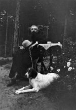
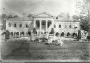
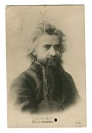
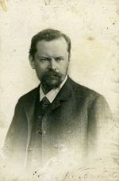
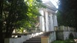
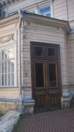
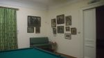
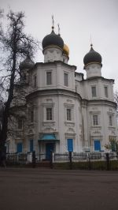

Страницы авторов "Тёмного леса"
Литературный Кисловодск и окрестности
Пишите нам! temnyjles@narod.ru
Смерть Владимира Сергеевича Соловьева оказалась для русского общества глубоким потрясением, наложившим отпечаток на духовную жизнь русской интеллигенции в последующие десятилетия.
"Это был истинно великий русский человек, гениальная личность и гениальный мыслитель, не признанный и не понятый в свое время, несмотря на всеобщую известность и на относительный, иногда блестящий успех, которым он пользовался" {Трубецкой С.Н. Смерть В.С.Соловьева 31 июля 1900 г. // Книга о Владимире Соловьеве. М., 1991, с.295.}, - писал один из ближайших друзей и учеников философа С.Н.Трубецкой.
Последние дни Соловьева, проведенные им в подмосковном имении Узкое {Более подробно об истории этого места см.: Коробко М. Подмосковная Узкое: Имение и его владельцы. Художественное собрание усадьбы. // Наше наследие. N29-30, с.126-145.}, можно сравнить с уходом из жизни Пушкина и Толстого. Еще при его жизни философ Л.М.Лопатин охарактеризовал мировоззрение Соловьева как "философию конца". Кончина философа как бы дополнительно окрасила его творческий путь и духовный опыт некоторой эсхатологической тональностью.
Резко возрос общественный интерес к его личности и мировоззрению. Появляются многочисленные публикации о Соловьеве, о встречах с ним, истолкования его мыслей и трудов. Большинство тех, кто когда-либо, хотя бы ненадолго попадал в соловьевский круг общения, стремились поведать об этом, внеся новые штрихи в его биографию.
Тех, кто непосредственно был свидетелем угасания философа, было достаточно много. Во-первых, это семья С.Н.Трубецкого и дети отсутствовавшего в это время владельца имения Петра Трубецкого; знакомые Соловьева, в том числе: Аграфена Михайловна Панютина, юрист Николай Васильевич Давыдов, приехавший с ним в Узкое, и историк Василий Осипович Ключевский; врачи, лечившие умирающего; его мать Поликсена Владимировна Соловьева и сестры; местный священник, принявший последнюю исповедь философа; прислуга, бывшая в главном доме усадьбы, и сестры милосердия. Шестеро из присутствовавших оставили нам свои свидетельства о тех днях, что подтверждает их осознание не просто жизненной, но особой духовной важности этого момента.
Первые по времени создания воспоминания принадлежат С.Н.Трубецкому. Они были написаны в Узком 12 августа того же 1900 года, и впервые опубликованы уже в сентябрьском номере журнала "Вестник Европы" под названием "Смерть В.С.Соловьева 31 июля 1900 г."
В 1910 году в газете "Московские ведомости" (номер от 3 ноября) появились мемуары об исповеди Соловьева, написанные священником С.А.Беляевым, бывшим настоятелем церкви села Узкого. Этот материал был включен в состав письма другого православного иерея Н.А.Колосова как ответ на рассказ бывшего униатского священника Н.А.Толстого о переходе Соловьева в греко-католическую (униатскую) церковь. (Он был опубликован в газете "Русское слово", незадолго до этого). Не вдаваясь в полемику по этому вопросу, отметим лишь, что, по нашему мнению, сам философ едва ли бы захотел категорично определить свою конфессиональную принадлежность. Еще в 1892 году в письме к В.В.Розанову, позже ставшему одним из самых непримиримых его противников, Владимир Соловьев так высказался об этом: "Исповедуемая мною религия Св.Духа шире и вместе с тем содержательнее всех отдельных религий: она не есть ни сумма, ни экстракт из них. как целый человек не есть ни сумма, ни экстракт своих отдельных органов" {Соловьев В.С. Письма Владимира Сергеевича Соловьева. Т. III. СПб., 1911. С.44.}.
Смерти Соловьева посвящен отрывок из частично опубликованного в 1916 году дневника Анны Шмидт, одной из поклонниц философа. Она приезжала в Узкое во время его болезни.
Работа приват-доцента Н.В.Давыдова "Из воспоминаний о В.С.Соловьеве" увидела свет незадолго до революции в историческом журнале "Голос минувшего" (1916, N12). Позже она была переиздана в исправленном и дополненном виде, будучи включенной в мемуарную книгу Давыдова "Из прошлого" как отдельная глава.
"Последние дни Владимира Соловьева" А.М.Панютиной были написаны ею уже в эмиграции, в связи с двадцатипятилетием со дня смерти философа. В 1926 году они были напечатаны в издававшейся в Париже русской ежедневной газете "Возрождение".
Воспоминания врача-педиатра Георгия Несторовича Сперанского стоят особняком от свидетельств остальных очевидцев. Их создание относится уже к 1960 году. Тогда в Узком, ставшем санаторием Академии наук, Г.Н.Сперанский проводил свой летний отдых. Рукопись его мемуаров "Кое-что о старом Узком" до настоящего времени хранится в санаторной библиотеке.
Хотя почти все эти воспоминания и были известны раньше, собранные вместе они представляют собой нечто качественно новое, некое сверхличное свидетельство о последних днях философа, обладающее особыми свойствами объективности и объемности изложения. Мы видим соловьевский уход с различных позиций и одновременно как единое человеческое свидетельство.
До сих пор не существует подробного жизнеописания Владимира Сергеевича Соловьева. Это дело будущего, очевидно, более далекого, чем хотелось бы. Мы начали его с конца -быть может, в этом тоже есть свой смысл.
Использованные источники цитируются по следующим изданиям:
Беляев С.А. (отец Сергий). [Воспоминания об исповеди В.С.Соловьева]. // Соловьев В.С. Письма Владимира Сергеевича Соловьева. Т. III. СПб., 1911, с.215-217.
Давыдов Н.В. Из воспоминаний о В.С.Соловьеве. // Давыдов Н.В. Из прошлого. 4.2. М, 1917, с.141-156.
Ельцова Е.М. (Лопатина Е.М.). Сны нездешние: (К двадцатипятилетию кончины В.С.Соловьева). // Книга о Владимире Соловьеве. М., 1991, с. 12-155.
Кузьмин-Караваев В.Д. Из воспоминаний о Владимире Сергеевиче Соловьеве. // Книга о Владимире Соловьеве, с.253-262.
Панютина А.М. Последние дни Владимира Соловьева.// Возрождение (Париж). 1926, 27 февраля.
Соловьев С.М. Жизнь и творческая эволюция Владимира Соловьева. Брюссель, 1977.
Сперанский Г.П. Кое-что о старом Узком. Рукопись, хранящаяся в библиотеке санатория Российской Академии наук "Узкое". 1960.
Трубецкой С.И. Смерть В.С.Соловьева 31 июля 1900 г. // Книга о Владимире Соловьеве, с.292-299.
Шмидт А.Н. Из дневника (отрывки). // Шмидт А.Н. Из рукописей Анны Николаевны Шмидт. М., 1916, с.245-269.
М.А.Н. А.Н.Шмидт на похоронах В.С.Соловьева. // Шмидт А.Н. Указ. соч., С.VII-VIII.
Для того, чтобы сделать основной текст максимально удобочитаемым, ссылки на мемуары и дневник заменены фамилиями их авторов. В угловых скобках вставлены уточнения, опущенные и недописанные слова, их части и отдельные фразы. В конце отдельным приложением помещены краткие сведения о мемуаристах и упоминаемых ими персоналиях.
В этот год Трубецкие проводили лето в Узком, имении брата Сергея Николаевича князя Петра, который уехал с женой лечиться за границу и просил Прасковью Владимировну переехать в его подмосковную, где оставались все его дети <Владимир, Софья, Любовь, Николай и Александра>{1}. Громадный дом был полон народу, жизнь в нем била ключом. Я тоже, как всегда, приехала повидаться со своими друзьями, и все мы спрашивали себя: приедет ли Соловьев или убоится слишком шумного общества?
(Панютина)
Вл.С.Соловьев приехал в Москву вечером 14-го июля и провел ночь в "Славянском базаре"{2}. Выехал он совершенно здоровый из с.Пустыньки, со станции Саблино{3}, но уже по приезде в Москву почувствовал себя нездоровым. 15-го, утром, в день своих именин, он был в редакции "Вопросов философии"{4}, где оставался довольно долго и послал рассыльного переговорить со мной по телефону.
(Трубецкой)
15 июля Сергея Николаевича вызвали по телефону{5}, с ним говорил Владимир Сергеевич и сказал ему, что он весьма желает приехать, но чувствует себя очень скверно.
- Ничего, - ответил ему Сергей Николаевич, - приезжай, ты тут наверное поправишься.
(Панютина)
Я звал его к себе, в подмосковную моего брата, с.Узкое, и предложил ему ехать из Москвы с Н.В.Давыдовым, его хорошим знакомым и моим родственником, которого я ждал к обеду. В редакции Владимир Сергеевич не производил впечатления больного, был разговорчив и даже написал юмористическое стихотворение.
(Трубецкой)
Совсем недавно <...> я получил письмо от работавшего в 1900 году в редакции "Вопросов философии и психологии" в качестве секретаря Ю.И.Айхенвальда, в котором приведено четверостишие, о котором говорю; B.C. сам записал его 15 июля в редакции журнала и просил передать Ю.И.Айхенвальду. Вот это четверостишие, хранящееся в подлиннике у Айхенвальда:
Свою к журналу близость ощущаю. Она отныне для меня не миф: "На чай" в казенных "знаках" получив, Я пью еще стакан естественного чая.
Почетный именинник психологического общества и его журнала. Владимир Соловьев
15 июля 1900 г. Москва.
(Давыдов)
Из редакции он отправился к своему другу, А.Т.Петровскому, которого он поразил своим дурным видом, а от него уже совсем больной прибыл на квартиру Н.В.Давыдова{6}. Не заставши его дома, он вошел и лег на диван, страдая сильной головною болью и рвотой.
(Трубецкой)
Последнее мое свидание с В.С.<Соловьевым> состоялось при очень странной обстановке дней за десять с небольшим пред его кончиной. Это было 15 июля 1900 г. Я тогда еще состоял Председателем Московского Окружного Суда и оставался, без семьи, один в Москве в ожидании моего ваканта <т.е. отпуска>, начинавшегося 17 июля. С.Н.Трубецкой это лето проводил с семьей в Узком, подмосковном имении единокровного брата своего П.Н.Трубецкого, который пребывал в другом своем имении на Дону. Еще накануне я по телефону, имеющемуся в Узком, сговорился с Трубецким о том, что приеду к нему 15-го в Узкое, отстоящее от Москвы верстах в 14, обедать часам к пяти.
Вернувшись домой из Окружного Суда в третьем часу, я заметил, что в передней на вешалке, кроме моего пальто, висит чья-то "разлетайка". На вопрос мой, кто это у меня, старый и добродушный служитель мой Иван невозмутимо ответил: "Не знаю, больной какой-то", а на вопрос, да где же он, объяснил, - "В кабинете вашем лежит, конечно". На восклицание мое, как же это ты пускаешь ко мне в кабинет незнакомых больных, Иван ничего не ответил, и я отправился в кабинет. Там на широком и низком диване действительно лежал незнакомец, обернувшись лицом к стене и так положив голову на принесенную ему Иваном с моей постели подушку, что я лица его не мог разглядеть, но заметил только, что незнакомец был коротко острижен. Я постоял над ним, кашлянул, что-то громко сказал, но лежащий человек молчал и не менял позы. Я совершенно растерялся, не зная, что надо в подобных странных случаях делать (не караул же кричать!), но в это время больной обернулся, взглянул на меня, и я узнал в нем Владимира Сергеевича.
(Давыдов)
Через несколько времени Н.В.Давыдов вернулся домой и был очень встревожен состоянием Владимира Сергеевича, объявившего ему, что едет с ним ко мне в Узкое. Он несколько раз пытался отговорить его от этой поездки, предлагал ему остаться у себя, но Владимир Сергеевич решительно настаивал. "Это вопрос принципиально решенный, - сказал он, - и не терпящий изменения. Я еду, и если вы не поедете со мной, то поеду один, а тогда хуже будет".
(Трубецкой)
Он очень изменился, что зависело главным образом оттого, что он остриг обычно длинные волосы свои, а кроме того он был смертельно бледен. На вопрос, что с ним, В.С. ответил, что сейчас чувствует морскую болезнь, и что ему надо немного отлежаться, а что завернул он ко мне, приехав нынче из Петербурга, так как в редакции журнала "Вопросы философии и психологии" ему сказали, что я еду нынче к Трубецкому, куда он просит и его захватить. Я, конечно, согласился, но В.С. был настолько плох на вид, что я усомнился в возможности везти его в Узкое и отправился на телефон, чтобы спросить у Трубецкого совета.
(Давыдов)
... Н.В.Давыдов сообщил по телефону Трубецкому, что у него сидит Соловьев и требует, чтобы он ехал с ним в Узкое; но что он, Давыдов, не знает, что ему делать, так как по его мнению Соловьеву очень плохо.
- Ничего, - отвечает Сергей Николаевич, - привези его. Он здесь отлежится и поправится. Это с ним бывает.
(Панютина)
С.Н. ответил, что если у Соловьева тошнота и головокружение, то его можно везти, что такие явления у него бывают не редко как результат малокровия мозга.
(Давыдов)
Н.В.Давыдов спрашивал меня по телефону, и я, думая, что у Соловьева простая мигрень, советовал предоставить ему делать, как он хочет.
(Трубецкой)
Я предупредил Трубецкого, что мы запоздаем, и пошел к Соловьеву, он продолжал лежать, пил глотками содовую воду, иногда словно забывался, но через мгновение уже болтал, сообщив мне между прочим, что получил в редакции "Вопросов" аванс, чему чрезвычайно рад, так как это компенсирует полученную в день именин (15 июля - празднование Св. Владимира) болезнь; это он даже передал в форме четверостишия, которое я не записал и забыл <см. выше>.
(Давыдов)
Мы стали поджидать их. Надвинулась полная темнота и пошел дождь, а их все не было. Стало тревожно; уж думалось, не случилось ли что-нибудь с ними в дороге.
(Панютина)
Время шло, а В.С. просил дать ему еще полежать; уже было больше пяти часов, и я предложил Соловьеву, отложив поездку в Узкое, остаться и переночевать у меня, а к Трубецкому отправиться завтра. Но он ни за что не соглашался отложить до следующего дня посещение Трубецкого и наконец объявил, что так как я, по-видимому, не хочу ехать, то он отправится один. При этом В.С. действительно встал и отправился, плохо стоя на ногах от слабости, в переднюю. Оставить его силою у себя я не решился и предпочел везти В.С. в Узкое. Других кроме связки книг вещей с ним не было, и остановился ли он где-либо в Москве, я от него добиться не мог; он повторял упорно только одно: "я должен нынче быть у Трубецкого".
(Давыдов)
Прошло несколько часов, в продолжении которых больной просил оставить его отлежаться. Наконец он сделал усилие, встал и потребовал, чтобы его усадили на извозчика. Наступил вечер, погода была скверная и холодная, шел дождик, предстояло ехать 16 верст, но оставаться Соловьев не хотел.
(Трубецкой)
Я нанял "лихача" и не без труда помог В.С. влезть в пролетку, которую пришлось закрыть, так как начал накрапывать дождь. Когда мы вышли на крыльцо, к В.С. подбежал нищий{7} и бросился целовать его руки, приговаривая, "ангел Владимир Сергеевич, именинник!" Соловьев вынул из кармана, не глядя, и подал нищему какой-то скомканный кредитный билет, объяснив, что это его собственный нищий, который всегда предчувствует время его приезда в Москву и, где бы он ни остановился, всегда безошибочно находит его.
Этот нищий и поднесь существует, пребывая всего чаще около крыльца дома Л.М. Лопатина или около церкви Покрова в Левшине; он одет довольно чисто и прежде носил фуражку с красным околышем; у него седая борода, и он нередко бывает трезв; между нашими общими знакомыми он известен как "Соловьевский нищий".
Поездка наша в Узкое была не только тяжела, но прямо кошмарна; В.С. совсем ослаб, и его приходилось держать, а между тем движение пролетки возбудило в нем вновь морскую болезнь; дождь усиливался и мочил наши ноги, и стало, благодаря ветру, холодно. Ехали мы очень тихо, так как на шоссе растворилась липкая грязь, и пролетка скользила набок и было уже темно. В одном месте дороги В.С. попросил остановиться, чтобы немного отдохнуть, добавив, "а то пожалуй сейчас умру". И это казалось, судя по слабости В.С., совершенно возможным. Но вскоре он попросил ехать дальше, сказав, что чувствовал то самое, что должен ощущать воробей, когда его ощипывают, и прибавил, "с вами этого конечно не могло случиться". Вообще, несмотря на слабость и страдание, в промежутки, когда ему делалось лучше, В.С., как всегда, острил, поднимал самого себя на смех и извинялся, что так мучает меня своим нездоровьем.
(Давыдов)
Продвигались они очень медленно, почти шагом эти 15 верст, которые отделяют Узкое от Москвы, так как каждый толчок вызывал невыносимую боль у бедного Соловьева. Он то терял сознание, склоняясь на грудь Николая Васильевича, то приходил в себя, требуя, чтобы его везли в Узкое, то в каком-то экстазе сочинял и декламировал стихи.
(Панютина)
Приехали мы в Узкое поздно; Соловьев был так слаб, что его пришлось из пролетки вынести на руках. Его тотчас же положили в кабинете на диван, и он, очень довольный, что добрался, все-таки, до Трубецких, просил, чтобы ему дали покойно полежать.
(Давыдов)
Наконец, в десятом часу вечера к подъезду бесшумно подкатила извозчичья пролетка с поднятым верхом. Один Давыдов вышел из нее бледный и взволнованный. Трубецкой бросился к нему навстречу, и на его вопрос: что Соловьев?- он ответил:
- Привез вам его, но он так плох, что сам из пролетки не может выйти. Его надо внести в дом на руках.
Действительно, Владимир Сергеевич был почти в обморочном состоянии. Из пролетки его на руках осторожно внесли в кабинет князя <П.Н.Трубецкого>, рядом с передней, и положили на громадный старинный диван, который занимал одну из стен кабинета.
(Панютина)
Дорогой ему стало хуже: он чувствовал дурноту и полный упадок сил, и когда он подъехал, его почти вынесли из пролетки и уложили на диван в кабинете моего брата, где он пролежал сутки, не раздеваясь.
(Трубецкой)
Понемногу он пришел в себя и стал говорить слабым голосом. Мы с княгиней, боясь его стеснить своим присутствием, не вошли в кабинет, но распорядились постелить ему белье на диван; однако Сергей Николаевич решил его пока не поднимать и положил ему только под голову подушки. Долго лежал он таким образом, разговаривая с Сергеем Николаевичем.
(Панютина)
Его мысль работала и сохраняла ясность еще тогда, когда он с трудом мог разбираться во внешних своих восприятиях. Он приехал под впечатлением тех мировых событий, которым посвящена последняя подписанная им статья{8}. Он собирался ее дополнить и обработать, хотел мне ее прочесть, но не мог. Он пенял мне на мою заметку, помещенную в "Вопросах философии" и набросанную еще до разгара китайского движения{9}.
Я обещал ему исправить невольную ошибку и, сидя около него, перекидывался с ним словами о великом и грозном историческом перевороте, который мы переживаем, и который он давно предсказывал и предчувствовал. Я вспомнил его замечательное стихотворение "Панмонголизм", написанное еще в 1894 году, и последняя строка которого врезалась мне в память. <И третий Рим лежит во прахе,/ А уж четвертому не быть.>
- Какое твое личное отношение к китайским событиям теперь, что они наступили? - спросил я Владимира Сергеевича.
- Я говорю об этом в моем письме в редакцию "Вестника Европы", -отвечал он. - Это - крик моего сердца. Мое отношение такое, что все кончено; та магистраль всеобщей истории, которая делилась на древнюю, среднюю и новую, пришла к концу... Профессора всеобщей истории упраздняются... их предмет теряет свое жизненное значение для настоящего; о войне Алой и Белой роз больше говорить нельзя будет. Кончено все!.. И с каким нравственным багажом идут европейские народы на борьбу с Китаем!.. Христианства нет, идей не больше, чем в эпоху Троянской войны; только тогда были молодые богатыри, а теперь старички идут!
И мы говорили об убожестве европейской дипломатии, проглядевшей надвигающуюся опасность, о ее мелких алчных расчетах, о ее неспособности обнять великую проблему, которая ей ставится, и разрешить ее разделом Китая. Мы говорили о том, как у нас иные все еще мечтают о союзе с Китаем против англичан, а у англичан - о союзе с японцами против нас. Владимир Сергеевич прочитал мне свое последнее стихотворение, написанное по поводу речи императора Вильгельма к войскам, отправлявшимся на Дальний Восток.
Он приветствует эту речь, на которую обрушились и русские, и даже немецкие газеты; он видит в ней речь крестоносца, "потомка меченосной рати", который перед "пастью дракона" понял, что "крест и меч - одно". Затем речь его снова вернулась к нам, и Владимир Сергеевич высказал ту мысль, которую он проводил еще десять лет тому назад в своей статье "Китай и Европа"{11}, - что нельзя бороться с Китаем, не преодолев у себя внутренней китайщины. В Культе Большого Кулака мы все равно за китайцами угнаться не можем; они будут и последовательнее и сильнее нас на этой почве. Владимир Сергеевич говорил и о внешних осложнениях, о грозящей опасности панисламизма, о возможном столкновении с Западом, о безумных усилиях иных патриотов наших создать без всякой нужды очаг смуты в Финляндии, под самой столицей...{12}
Это была самая значительная беседа наша за время болезни Владимира Сергеевича.
(Трубецкой)
Давыдов, тем временем, сообщил нам подробно, что он пережил, пока они ехали.
(Панютина)
Трубецкой продолжал еще думать, что болезненное состояние В.С. обычный припадок его малокровия мозга, но на следующее же утро выяснилось, что положение В.С. гораздо серьезнее и тяжелее.
(Давыдов)
Но всем нам ясно становилось, что болезнь его не простая мигрень, которой он иногда страдал, а нечто весьма серьезное. Мы стали по телефону вызывать докторов из Москвы. Но, увы, старания наши были напрасны. Ни единого доктора невозможно было добиться; все они были в отпуску или разъехались на отдых, а те, которые оставались, до того были завалены делами, что не соглашались ехать за город. Между тем время шло и положение больного все ухудшалось.
(Панютина)
Я эту ночь провел тоже в Узком и утром виделся с В.С., который, хотя продолжал лежать, уговаривал меня не ехать, как я собирался, на другой же день к себе в деревню, а подождать немного, пока он поправится, и отправиться вместе с ним к нашим общим друзьям <С.М. и В.Н.> Мартыновым. Трубецкому В.С. передал, что этою ночью он видел во сне, но совершенно явственно, Лихунчана, который на древнегреческом языке сказал ему, что он вскоре умрет. Соловьев в это утро не был в забытьи, он даже весело острил, но память ему уже изменяла и он, например, не мог вспомнить, где он, приехав в Москву, оставил свои вещи, оказавшиеся потом в "Славянском базаре". Мне в это же утро надо было вернуться в Москву, чтобы в суде сдать должность моему заместителю на время, и я уехал из Узкого, не дождавшись явки врача, за которым послали Трубецкие. Провожая меня, Прасковья Владимировна Трубецкая сказала, что она уверена вопреки мнению С.Н., что Соловьев не поправится; при этом она вспомнила, что как-то, расставаясь с В.С., она сказала ему "прощайте", но он поправил ее, сказав "пока до свидания, а не прощайте. Мы наверное увидимся, я перед смертью приеду к вам". Неосозноваемым предчувствием В.С. смерти она объясняла такое упорное стремление его добраться к Трубецким, ибо ни экстренного, ни простого дела у него в то время к С.Н. не было.{13}
(Давыдов)
Давыдов вернулся в Москву, и ему было поручено, во что бы то ни стало, выслать нам медицинскую помощь, но и его поиски не увенчались успехом, не только докторов, но и сестер милосердия нельзя было найти.
(Панютина)
На другой день, 16-го, был вызван доктор А.Н.Бернштейн...
(Трубецкой)
Оставив Узкое, я был вынужден по своим делам на следующий же день ехать в деревню, но успел узнать от Трубецких, что врач нашел положение В.С. очень тяжелым и опасным, а болезнь его даже затруднился определить, так как, казалось, все жизненные органы Соловьева находятся в очень плохом состоянии; но наиболее рельефно определилась болезнь почек (уремия){14}.
(Давыдов)
...17-го приехал Н.Н.Афанасьев, который и пользовал Владимира Сергеевича до самой его смерти. Кроме того, его посещали московские доктора А.А.Корнилов, бывший у него три раза, проф<ессор> А.А.Остроумов, следивший за болезнью, и А.Г.Петровский. Так как Н.Н.Афанасьев должен был временно отлучаться по делам службы, то на помощь ему был приглашен А.В.Власов, ординатор проф<ессора М.П.> Черинова, находившийся при больном безотлучно.
Врачи нашли полнейшее истощение, упадок питания, сильнейший склероз артерий, цирроз печени и уремию. Ко всему этому примешался, по-видимому, и какой-то острый процесс, который послужил толчком к развитию болезни <...> Состояние с самого начала было признано крайне серьезным. Нельзя не отметить самого внимательного и сердечного отношения со стороны врачей, лечивших Владимира Сергеевича и сделавших все, что было в их силах.
Первые дни Владимир Сергеевич сильно страдал от острых болей во всех членах, особенно в ногах, спине, голове и шее, которую он не мог повернуть. Затем боли несколько утихли, но осталось дурнотное чувство и мучительная слабость, на которую он жаловался. Больной бредил, и сам замечал это. По-видимому, он все время отдавал себе отчет в своем положении, несмотря на свою крайнюю слабость. Он впадал в состояние полузабытья, но почти до конца отвечал на вопросы и при усилии мог узнавать окружающих.
Первую неделю он иногда разговаривал, особенно по общим вопросам, и даже просил, чтобы ему читали телеграммы в газетах. <...> он говорил мне во время болезни, что приехал в Москву главным образом "к своим покойникам", чтобы навестить могилу отца и деда <С.М. и М.В.Соловьевых>.
(Трубецкой)
Сергей Николаевич не отходил от Соловьева и страшно утомлялся. Видя такое безвыходное положение, Прасковья Владимировна, а потом и я, мы обе решили отбросить в сторону всякие условности и начать ухаживать за больным. Он все лежал на диване, метался, и жестоко страдал. Глаза его были воспалены и слезились, и тихие стоны вырывались из груди, но ум еще был замечательно ясен.
(Панютина)
На второй же день он стал говорить о смерти, а 17-го объявил, что хочет исповедоваться и причаститься, "только не запасными дарами, как умирающий, а завтра после обедни". Потом он много молился и часто спрашивал, скоро ли наступит утро и когда придет священник?
(Трубецкой)
И вот как-то вечером приходит ко мне человек Трубецких с просьбой от Сергея Николаевича отслужить на другой день литургию и после нее прийти причастить обеденными Дарами <Т.е. освященными на только что отслуженной литургии.> (личное желание Влад<имира> Серг<еевича>) приехавшего из Москвы больного барина. На другой день, в конце утрени, пришла нянька Трубецких - с просьбой исповедать больного до обедни (при этом она назвала и имя больного -Владимир, а кто он, она не знала). Отслужив утреню, я отправился в дом Трубецких. В передней встретил меня сам князь Сергей Николаевич и, повторив просьбу больного, спросил меня: знаю ли я его? Я ответил, что не знаю. Вслед за этим князь ввел меня в кабинет, где лежал на диване Влад<имир> Сергеевич, и познакомил с ним (помню, между прочим, что волосы у Влад<имира> Серг<еевича> были острижены).
(Беляев (отец Сергий)
Местный батюшка, отец Сергий{15}, тотчас же пришел: мы, конечно, все удалились и оставили их вдвоем.
(Панютина)
Исповедался Влад<имир> Серг<еевич> с истинно христианским смирением (исповедь продолжалась не менее получаса) и, между прочим, сказал, что не был на исповеди уже года три, так как, исповедовавшись последний раз (в Москве или Петербурге - не помню), поспорил с духовником по догматическому вопросу (по какому именно Влад<имир> Серг<еевич> не сказал) и не был допущен им до Св. Причастия. - "Священник был прав, - прибавил Влад<имир> Серг<еевич>, - а поспорил я с ним единственно по горячности и гордости: после этого мы переписывались с ним по этому вопросу, но я не хотел уступить, хотя и хорошо сознавал свою неправоту; теперь я вполне сознаю свое заблуждение и чистосердечно каюсь в нем". Когда кончилась исповедь, я спросил Влад<имира> Серг<еевича>, не припомнит ли он еще каких-нибудь грехов.
- Я подумаю и постараюсь припомнить, - отвечал он. Я предложил ему подумать, а сам стал было собираться идти служить литургию, но он остановил меня и попросил прочитать ему разрешительную молитву, так как боялся впасть в беспамятство. Я прочитал над ним разрешительную молитву и пошел в церковь служить обедню. <...>.
Помню еще, что сам Влад<имир> Серг<еевич> говорил мне, что его считают вегетарианцем - на том основании, что он не ест мяса, но что хотя он и на самом деле не ест мяса, но только отнюдь не потому, что придерживается вегетарианства.
(Беляев)
Погода снова наступила чудная, окна были открыты и церковное пение долетало до больного, так как окно, под которым он лежал, было обращено в сторону церкви, находящейся в Узком совсем близко от дома. Во все время обедни Соловьев горячо молился и осенял себя широким православным крестным знамением. После большого выхода священник прошел в дом, держа чашу с Дарами в руках и приобщил Соловьева.
(Панютина)
Отслужив обедню, я с обеденными Св. Дарами пришел снова к Влад<имиру> Серг<еевичу> и спросил его: не припомнил ли он за собой еще какого-либо греха?
- Нет, батюшка, - ответил он. - Я молился о своих грехах и просил у Бога прощения в них, но нового ничего не припомнил.
Тогда я причастил его Св. Тайн. При этом присутствовали князь Сергей Николаевич и супруга его Прасковья Владимировна.
(Беляев)
Все служащие в доме, ходившие за ним, по окончании службы, поочередно стали подходить к нему и поздравлять его с принятием Св.Тайн, а старая няня детей поднесла ему просфору с пожеланием здоровья. Я тоже поздравила и спросила его, как он себя чувствует.
- Теперь легко, - ответил он мне, - да легче очистить свою душу, чем сбросить это тело. Как труп в пустыне я лежу, ничего до меня не долетает!
(Панютина)
18-го он исповедался и причастился Св. Тайн с полным сознанием.
(Трубецкой)
В этот же день, наконец, приехал один доктор, имя которого я забыла. Он внимательно осмотрел Владимира Сергеевича, прописал лекарство, дал указания, как за ним ходить, но надежды на выздоровление никакой не подал. По его мнению положение было безнадежно. Сергей Николаевич был потрясен. Помимо личного горя, его мучила мысль, что он не может дать знать семье Владимира Сергеевича о его болезни. Где находились его мать, брат и сестры, он не знал, а спросить его самого было бесполезно, так как после отъезда доктора бред овладел больным всецело. Мы с княгиней уже не отходили от него.
(Панютина)
В этот же день Влад<имир> Серг<еевич> впал в беспамятство и до самой кончины не приходил в себя.
(Беляев)
П.В.Трубецкая{16}, когда в 1900 г. в Узкое привезли тяжело больного их друга Владимира Соловьева, решила, что у него туберкулезный менингит. Эту болезнь, которая бывает чаще всего у детей, знают всего лучше детские врачи, поэтому она вызвала меня к Соловьеву. Он лежал уже без сознания в кабинете П.Н.<Трубецкого>. На консилиуме с невропатологом <А.А.Корниловым>, с которым мы приехали вместе, мы отвергли этот диагноз и предположили у него уремию, что и подтвердилось затем на вскрытии.
(Сперанский)
В последующие дни нам удалось раздобыть сначала одного доктора, потом и другого, молодого врача <А.В.> Власова, который и оставался при нем до конца. Доктора спали в соседней комнате, а мы сидели при больном всю ночь, так как сестер милосердия все еще не было; я у изголовья его - прикладывала к его лбу холодные компрессы, а Прасковья Владимировна сменяла согревающие компрессы на груди.
Он метался, стонал и бредил на греческом, латинском, французском и итальянском языках: минутами, как будто узнавая нас, говорил нам благодарные ласковые слова, прибавляя:
- Вы ничего больше не можете, ничего.
Звал свою мать, беседовал с некоторыми знакомыми и друзьями, но чаще всего его бред останавливался на евреях, и он повторял, что их ждут ужасные гонения.
- Молиться за них надо, - восклицал он постоянно.
- (Панютина)
Раз он сказал моей жене: "Мешайте мне засыпать, заставляйте меня молиться за еврейский народ, мне надо за него молиться", - и стал громко читать псалом по-<древне>еврейски. Те, кто знал Владимира Сергеевича и его глубокую любовь к еврейскому народу, поймут, что эти слова не были бредом. Смерти он не боялся - он боялся, что ему придется "влачить существование", и молился, чтобы Бог послал ему скорую смерть.
(Трубецкой)
Днем его преследовал Китай; ему казалось, что оттуда надвигаются несметные полчища.
- Quells sont ses figures jaunes grimaѓШantes? <Что это за желтые гримасничающие лица? - фр.> - спрашивал он неоднократно.
Потом мы догадались, что его беспокоят лица, сотканные в той материи, которой была обтянута высокая спинка дивана, на котором он лежал. Прасковья Владимировна завесила эту спинку простыней и приколола к ней довольно большое распятие из слоновой кости. Мы все чередовались при нем, никогда не оставляли его одного, и старались читать ему громко молитвы, что всегда успокаивало его. И вот раз, когда я одна дежурила при нем, очевидно, взгляд его упал на распятие, и он не понял, что это такое.
- Кто это, кто это? - спросил он.
- Это распятие, - ответила я.
- Кто? кто? - переспросил он.
Я повторила, но он меня не понимал. Тогда я нагнулась к нему и, возвысив голос, сказала:
- Владимир Сергеевич, это Христос.
Лицо его внезапно преобразилось, необычайная радость отразилась на нем, он весь просиял: и он, лежавший как пласт уже несколько дней, вдруг приподнялся, простер вперед руки и восторженно воскликнул:
- Христос!
Но силы его оставили, и он беспомощно опустился на подушки.
Между тем, слух о болезни Соловьева распространился по Москве, и в Узкое стали наезжать некоторые его знакомые и поклонники, и поклонницы. Они бродили по парку, жили даже у крестьян в избах, но доктора настаивали на том, чтобы к больному никого из посторонних не пускали. Когда приехал <В.О.> Ключевский, его, однако, провели к кабинет, но к больному он не подошел, а стал сзади и долго молча смотрел на него. Приехала также одна из сестер, г-жа <В.С.> Попова, но по своим семейным обстоятельствам не могла остаться с братом. И Ключевский и она, они оба обещали вызвать мать Владимира Сергеевича <П.В.Соловьеву>. Силы его падали, голос слабел и дыхание стало спокойнее. Сестры милосердия, наконец, сменили нас.
(Панютина)
Силы его слабели: он меньше говорил, да и окружающие старались говорить с ним возможно меньше; он продолжал молиться то вслух, читая псалмы и церковные молитвы, то тихо, осеняя себя крестом. Молился он и в сознании, и в полузабытьи.
24-го числа приехала мать Владимира Сергеевича и его сестры.
Он узнал их и обрадовался их приезду, но силы его падали с каждым днем.
(Трубецкой)
Дней за шесть до конца приехала мать с двумя дочерьми - Надеждой и Поликсеной Сергеевной.
Владимир Сергеевич узнал их и очень им обрадовался. Они заняли комнату рядом с кабинетом, и мы тогда отошли от него, но кн<ягиня П.В.> Трубецкая старалась всячески успокаивать и поддерживать бедную старушку в это тяжелое для нее время в чужом доме, среди незнакомых для нее людей. Я же только изредка заходила к больному и видела, как медленно, но несомненно он угасал. Однако мать и сестры еще надеялись, и Поликсена Сергеевна даже решилась отлучиться по делам в Москву и опоздала к концу.
(Панютина)
"Должно быть, я слишком много зараз работал", - говорил он в последние дни; как ни велико было обилие его дарований, его физический организм не выдержал постоянного напряжения, постоянной кипучей деятельности.
(Трубецкой)
Я провела три дня вблизи его больного, когда он был уже не в полном сознании. Меня пустили к нему, по просьбе его матери, один раз. Я его увидела спящим. Мы жили далеко друг от друга, и я должна была уехать.
(Шмидт)
В последние дни температура сильно поднялась (в день смерти до 40), появились отек легких и воспаление сердца <...> 27-го ему стало как бы легче, он меньше бредил, легче поворачивался, с меньшим трудом отвечал на вопросы; но температура начала быстро повышаться: 30-го появились отечные хрипы, а 31-го, в 9 1/2 ч. вечера он тихо скончался{17} <...> "Трудна работа Господня", - говорил он на смертном одре.
(Трубецкой)
Агония началась 30-го июля{18} отеком легкого, длилась почти сутки и 31-го к вечеру его не стало.
При последних его минутах у его изголовья стояли мать и сестра, у ног - Трубецкой с женой, а в глубине комнаты - доктор <А.В.Власов> и я.
Трубецкой взял руку Владимира Сергеевича, сложенную крестным знамением и осенил его широким крестом.
Так умер Соловьев.
(Панютина)
Гроб поставили в церковь. Никто даже не читал над покойником. Вечером второго августа мы с отцом <М.С.Соловьевым> достигли наконец Узкого{19}. О смерти <В.С.> Соловьева мы узнали в этот день. 2-го августа, на пути из Швейцарии, купив газету на станции между Смоленском и Можайском. Двинулись мы в Россию, получив неожиданную телеграмму: Ton frere Vladimir est malade a Moscou, chez Troubetzkoi, reviens. <Твой брат Владимир болен в Москве у Трубецкого, возвращайся. - фр.>
С.Н.Трубецкой встретил нас на крыльце. Он горячо сжал руку моего отца и голосом, в котором слышались слезы, сказал: "Ах Михаил Сергеевич, как я вас ждал!". Он повел нас в церковь, снял с лица умершего мешок со льдом. Голова Соловьева, гладко остриженная, казалась неожиданно маленькой. Ничего из Моисеева величия. Мой отец пожелал остаться наедине с братом, мы вышли на церковное крыльцо, под черное августовское небо, усеянное звездами. Мы узнали, что в этот день приезжала Софья Петровна <Хитрово> и говорила о желании Соловьева быть похороненным в Пустыньке. Но сестры покойного отнеслись к Хитрово холодно...
Утром 3 августа состоялось отпевание в университетской церкви св.Татианы, той самой, где мальчику Володе при звуках херувимской песни явилась дева, пронизанная лазурью золотистой, с цветком нездешних стран в руке{20}.
Москва была совсем пуста, в церкви небольшая кучка народа.
(Соловьев)
По стенам и сзади стояли родные, личные друзья и знакомые, несколько литераторов и ученых, но публики, общества - не было. Оно не пришло сказать ему последнее "прости".
(Кузьмин-Караваев)
В отпевании приняли участие: сакелларий Благовещенского собора, Н.И.Иванцов, брат А.М.Иванцова-Платонова, молодой иеромонах Петр Зверев (теперь епископ), старый духовник Соловьевых Ф.М.Ловцов от Успения на Могильцах. Из Петербурга приехал князь А.Д.Оболенский. Гроб украсили венками. На одном из них было написано: "Какой светильник разума угас! Какое сердце биться перестало!"{21}
Кадила звенели, старый Федор Мартынович Ловцов плакал, утирая слезы платком с широкой красной каймой. Замороженное лицо умершего начало оттаивать, по щекам стекали капли, похожие на слезы...
(Соловьев)
Бледное лицо его с непривычно, совсем коротко остриженными волосами, еще бледнее и чище и строже, чем при жизни, напоминало прекрасную византийскую икону.
(Ельцова)
Это не был уже Соловьев - дух во плоти. Перед глазами лежала в гробу одна плоть - земная оболочка великого, свободного, вечного духа. Его дух уже был освобожден от оков личности, как сказал на могиле один оратор <В.Н.Сперанский>. Красивые черты дорогого лица уже были обезображены печатью смерти... Мертвенная бледность и худоба не поражали - и при жизни у него никогда не было цветущего вида. Поражало отсутствие взгляда, глаз. Уже не было видно на лице мощи колоссального ума, чарующей прелести дивного сердца... Как-то не верилось, что жизнь его оборвалась, - ...что скрылся он За грань земного кругозора{22}.
(Кузьмин-Караваев)
Когда вынесли гроб и поставили на колесницу, я пошел впереди гроба, несколько сбоку, позади же гроба шли близкие и родственники. А.Н.Шмидт шла предо мною, справа впереди гроба, отдельно от всех. Она плакала и время от времени смотрела на гроб каким-то особенным взглядом, который я иногда ловил, а иногда и ощущал не видя. Несмотря на то, что и сам я не мог удерживаться от слез, мысль о покойном все время чередовалась у меня с мыслью об этой загадочной женщине. В это время брат Вл<адимира> С<ергееви>ча - Михаил Сергеевич, шедший почти рядом со мной, видя нескрываемую мою скорбь, подошел ко мне и стал расспрашивать о моих отношениях к Вл<адимиру> С<ергееви>чу; вскоре он также спросил меня, не знаю ли я эту женщину, идущую впереди; я отозвался незнанием. Вопрос М<ихаила> С<ергееви>ча побудил меня удовлетворить и собственному любопытству, я поравнялся с А<нной> Н<иколаевн>ой и хотел спросить ее: "Вы, должно быть, очень любили его?" Но как-то сразу почувствовал, что это может быть понято в нежелательном смысле, и я только спросил ее: "Вам очень жаль его?" Она быстро взглянула на меня заплаканными глазами и, утвердительно кивнув головой, заплакала еще сильней. Я почувствовал, что продолжать разговор было неудобно.
(М.А.Н.)
Маленькая фигурка А.Н.Шмидт шла около гроба. В глазах ее был тихий экстаз, быть может, она верила, что ее возлюбленный воскреснет.
(Соловьев)
Уже когда мы шли за гробом по Пречистенке к <Ново>девичьему монастырю, я очутилась рядом с женщиной, высокой, очень худой, изможденной, и узнала Е.И.Поливанову.
Я вдруг спросила ее:
- Помните: "В былые годы любви невзгоды..."{23}
Она улыбнулась и ответила быстро:
- Нет, нет, не говорите мне... Я сейчас заплачу...
Были еще какие-то очень странные, по простой терминологии, "чудные" женщины, странно одетые; профессора, Трубецкие, <В.А.> Гольцев, студенты... Были нищие и знакомый нищий в дворянской фуражке с бакенбардами и красным носом... Извозчики снимали на козлах шапки и крестились...
(Ельцова)
Начало августа - самое глухое время в Москве, и на похоронах было сравнительно немного народу. Мы шли за его гробом с несколькими друзьями, вспоминали о нем и говорили о том, какого хорошего, дорогого и великого человека мы хороним.
(Трубецкой)
Помню ее <А.Н.Шмидт> стоящей над могилой в ту минуту, когда в землю опускался гроб, пристально смотрящей в могилу. Начались надгробные речи. Несколько слов сказал и я: обращаясь к покойному, я вспомнил тот завет, который он оставил в последнее мое свидание с ним. На мой вопрос: "Что самое важное и нужное в жизни?" - он тогда дал такой ответ: "Быть возможно чаще с Господом", а потом подумав прибавил: "Если можно, всегда быть с Ним". Когда я начинал свою речь, то почувствовал, как она, стоявшая рядом со мною, метнулась в меня глазами, а затем снова опустила их.
(М.А.Н.)
Над могилой были произнесены речи. Поклонник Соловьева <А.Я.> Гартунг патетически восклицал: "И начатые песни Гарольд не скончал и лежит под могильным холмом"{24}. Молодой философ <В.Н.> Сперанский говорил весьма напыщенно о том, что "все кружась, исчезает во мгле, неподвижно лишь солнце любви"{25}. Но вот выросла над ямой сухая фигура В.И.Герье. Он сказал несколько хороших простых слов, <которые своей теплотой и искренностью были много лучше патетических и высокопарных речей Гартунга, Сперанского и других>: "Радость и надежду всегда приносил ты с собой, Владимир Сергеевич!", был лейтмотив его речи.
(Соловьев)
Когда прах Влад<имира> Сергеевича был опущен в могилу, я, простившись с кн. С.Н.<Трубецким>, вышел за ворота монастыря и взял первого попавшегося извозчика. Извозчик спросил меня, кого это хоронили? Я ответил, что хоронили одного известного русского ученого и писателя.
- Уж не Владимира ли Сергеевича Соловьева?
Я ответил, что его, и при этом спросил извозчика: почему он его знает? Извозчик отвечал, что он всегда стоит на том месте, где Влад<имир> Серг<еевич> останавливался по приезде в Москву, т.е. у квартиры его матери.
- И как узнаешь, бывало, что приехал Влад<имир> Серг<еевич>, так и поджидаешь его всегда у подъезда, и как он только выйдет, спрашиваешь: куда ехать? А о цене не говоришь, потому что он сам платит всегда больше, чем следовало. Добрый был барин: таких нынче мало. Если увидит нищего, сейчас тебя остановит и слезет подать милостыню.
(Беляев)
Вечером С.Н.Трубецкой пришел к нам, и тяжело опустившись в кресло, сказал: "Да, сегодня мы схоронили самого большого русского человека!"
(Соловьев)
{1} П.Н.Трубецкой, по данным Н.В.Давыдова, в это время был в другом своем имении, находившемся в Области Войска Донского (см.ниже).
{2} "Славянский базар" - гостиница одноименная знаменитому ресторану и находившаяся рядом с ним (Никольская ул., ныне д.17). В.С.Соловьев останавливался в ней и ранее, во время приездов в Москву.
{3} Пустынька (Царскосельский уезд Санкт-Петербургской губ.) - имение С.П. Хитрово, в котором неоднократно бывал и жил В.С.Соловьев. Саблино - станция Николаевской железной дороги, вблизи которой находилась Пустынька.
{4} "Вопросы философии и психологии" - журнал Московского психологического общества, издававшийся в 1889-1918 гг. Его редакция находилась в Георгиевском переулке (ныне Вспольный пер., д.13).
{5} В оригинале 13 июля, но это число вызвано ошибкой памяти А.М.Панютиной. Исправлено нами.
{6} Она находилась в левом флигеле городской усадьбы Загоскиной, расположенной в Большом Левшинском переулке (ныне ул.Щукина, д.6).
{7} Об этом же нищем пишет и К.М.Ельцова, выделяя его среди остальных. См.: Ельцова К.М. Указ.соч., с. 132-133. Он принимал участие в похоронах В.С.Соловьева.
{8} Имеется в виду работа В.С.Соловьева "По поводу последних событий", впервые опубликованная в 1900 году в том же девятом номере журнала "Вестник Европы", что и воспоминания С.Н.Трубецкого. Под "последними событиями" Соловьев подразумевал боксерское восстание в Китае, в котором он увидел силы, несущие гибель европейской цивилизации.
{9} Имеется в виду статья С.Н.Трубецкого, бывшая рецензией на соловьевские "Три разговора...". Она была опубликована в журнале "Вопросы философии и психологии". (1900. N5, с.53).
Основные претензии Соловьева к С.Н.Трубецкому по поводу статьи наиболее ярко выражает следующий абзац его работы "По поводу последних событий":
"На стр. 363 читаем: "В.С. согласится, что эсхатология отца Пансофия, при всей своей фантастичности, отлична от эсхатологии первого века. Почтенный монах знает кое-что о Ницше, о Толстом, о государственном социализме, о франмасонах и даже о последних событиях в Китае". В общем это замечание мне не совсем понятно. Ведь вымышленный автор моей "повести об антихристе", монах Пансофий, представлен мною как наш современник, и следовательно, его "эсхатология", при всей своей фантастичности, как выражается кн.Трубецкой, или при всей своей верности положительным христианским началам, как сказал бы я, никак не может во всех своих внешних фактических частностях совпадать с эсхатологией первого века. Каким образом, на каком основании, да и по какому поводу стал бы я представлять современного образованного монаха, кончившего курс в духовной академии, ничего не знающим о Ницше, Толстом, государственном социализме и франмасонах? Но если автору моей повести невозможно было не знать об этих предметах, то о "последних событиях в Китае", он, напротив, решительно ничего не мог знать. Ведь это было бы такое же точно знание, какое один ревностный градоправитель предполагал в подчиненной ему полиции, требуя, чтобы она извещала его обо всяком пожаре за полчаса до того, как покажется огонь. <...>" Цит. по изд.: Соловьев В.С. Смысл любви. Избранные произведения. М., 1991.С.428-429.
{10} На самом деле последним поэтическим произведением Соловьева было "Вновь белые колокольчики", датируемое 8 июля 1900г. (если не считать четверостишия, написанного в редакции "Вопросов философии и психологии" в день приезда в Узкое).
{11} Впервые опубликована в журнале "Русское обозрение" (1890, NN2-4). В статье "По поводу последних событий" В.С.Соловьев также ссылается на нее в следующем контексте: "...предвидение и предчувствие этих <китайских> событий и всего, чем они грозят далее, действительно у меня было и высказывалось мною еще гораздо раньше нынешнего февраля, например, в появившейся десять лет тому назад статье: "Китай и Европа" ("Русское обозрение", 1890)".
{12} Имеется в виду проблема статуса Финляндии в составе Российской империи, обсуждавшаяся тогда на страницах периодической печати.
{13} Эта сцена произошла в московской квартире С.Н.Трубецкого в доме Общества российских врачей, расположенного в Староконюшенном переулке (ныне д.36). Любопытно сравнить воспоминания Н.В.Давыдова со свидетельствами княжны Ольги Николаевны Трубецкой (1867-1947) - одной из многочисленных сводных сестер тогдашнего владельца Узкого и А.М.Панютиной: "Впоследствии вспоминали, что за год до этого прощания с братом и его женой он <В.С.Соловьев> сказал им: "А если помирать начну - приеду к вам...". См.: Трубецкая О.Н. Князь С.Н.Трубецкой. Воспоминания сестры. Нью-Йорк. 1953, с.61; "И вот, в один из <...> его <В.С.Соловьева> приездов, Праск<овья> Влад<имировна Трубецкая> и я, однажды, сидя в гостиной, работали и тихо разговаривали. Соловьев сидел против нас, но не принимал никакого участия в нашей беседе; его часто охватывало такое молчаливое настроение. Лучистые, прекрасные глаза его были устремлены в пространство и только изредка останавливались на нас. Вдруг он громко сказал:
- А я приеду к вам умирать!"
Мы так привыкли к его странностям, что в то время не обратили внимания на это неожиданное заявление и не придали значения его словам, а вспомнили об них лишь тогда, когда он умирал на наших руках". См. Панютина А.М. Указ. соч.
{14} Как свидетельствуют знакомые Соловьева, наиболее вероятная причина уремии - неумеренное употребление скипидара. "Этот диагноз не мог не поразить близко знавших Соловьева своей неожиданностью. Острый процесс послужил только толчком к развитию болезни. Истощение, упадок питания - суть результаты. Склероз артерий - тоже основная причина болезни; следовательно - цирроз почек. Но откуда он взялся и что могло его вызвать? Невольно вспомнилась привычка Соловьева употреблять скипидар, казавшаяся ему не только вполне невинной, но прямо полезной для здоровья. Внутрь скипидара Соловьев никогда не принимал. Он любил его запах, считал универсальным дезинфицирующим и дезодорирующим средством и, в качестве такового, уничтожал в громадном количестве. Всевозможные бактерии и микробы были маленькой слабостью Соловьева. Он их боялся до смешного и, дабы оградить себя от них, обливал скипидаром стены и пол своей комнаты, свою постель, платье, десятки раз в день вытирал им руки и т.д.; даже в бумажник с деньгами он, случалось, наливал скипидар. Словом, он постоянно в течение более десяти лет находился в атмосфере, обильно насыщенной парами терпентинного масла, и тем постепенно, но верно отравлял свой организм. По какой-то роковой случайности губительное действие паров скипидара - и именно в смысле развития болезни почек - оставалось Соловьеву неизвестным. Ни ему самому, ни знавшим его привычку почему-то никогда не приходило в голову справиться о влиянии скипидара у специалистов по фармакологии и токсикологии. Конечно, все это догадка, быть может, не вполне основательная. Но бесконечно тяжело сознавать, что в ряду причин безвременной кончины Соловьева было и роковое заблуждение". См.: Кузьмин-Караваев В.Д. Указ. соч., С.261.
{15} Здесь и ниже в оригинале ошибочно - отец Георгий. Исправлено нами.
{16} В оригинале ошибочно - А.В.Трубецкая. Исправлено нами.
{17} В сообщениях о смерти В.С.Соловьева, опубликованных 1 августа 1900 г. в газетах "Московские ведомости", "Русские ведомости", "Русское слово" и др., констатировалось, что его кончина наступила ровно в 9 часов вечера.
{18} В оригинале ошибочно - 30 августа. Исправлено нами.
{19} Первоначально С.М.Соловьев относил свое и отцовское прибытие в Узкое к более раннему времени: "Брату Михаилу Сергеевичу была послана телеграмма в Шамуни: он застал брата уже в гробу вечером 1 августа". См.: Соловьев СМ. Биография Владимира Сергеевича Соловьева // Соловьев В.С. Стихотворения. Изд. 7-е, доп. М., 1921, с.46.
{20} Перефразируются строки из поэмы В.С.Соловьева "Три свидания" (1898):
"Пронизана лазурью золотистой, В руке держа цветок нездешних стран Стояла ты с улыбкою лучистой, Кивнула мне и скрылася в туман."
{21} Цитата из стихотворения Н.А.Некрасова "Памяти Добролюбова" (1864). На гроб В.С.Соловьева были возложены два венка с такой надписью, от редакций журналов "Неделя" и "Русская мысль".
{22} Цитата из стихотворения А.М.Жемчужникова "Памяти Владимира Соловьева", опубликованного в журнале "Вестник Европы" (1900. VIO, с.695).
{23} Это название и начало стихотворения В.С.Соловьева, посвященного Е.М.Поливановой (1878).
{24} Цитируемое двустишие было включено В.С.Соловьевым в написанный им некролог философа Н.Я.Грота (1899).
{25} Цитата из стихотворения В.С.Соловьева "Бедный друг, истомил тебя путь..." (1887).
Айхенвальд Юлий Исаевич (1872-1928) - литературный критик, публицист, писатель. В 1922 г. был выслан за границу, после чего жил и работал в Берлине.
Афанасьев Николай Николаевич - врач. Впоследствии служил при доме призрения Московского дворянства и 4-й мужской гимназии, а также занимал должность дежурного врача императорских театров.
Беляев Сергей Александрович (отец Сергий) - настоятель церкви Казанской иконы Божией матери с.Узкое, с 1897 г. преподавал закон божий в Узковском начальном земском училище. Попечитель аналогичных учебных заведений в селах Московского уезда Орлово и Терешково, писатель Михаил Константинович Иогель (1848-1909), побывав в Узком 8 мая 1899 г. для "обзора" местного училища и "производства в нем экзаменов", отметил, что оно вызывает "наилучшее впечатление", среди тринадцати им виденных, но "... жаль, что законоучитель С.А.Беляев во многом не выполнил программы, так что сведения, полученные учениками, отличаются бессвязностью и отрывочностью". См.: Отчеты по обзору начальных училищ Московского уезда за 1898-99 учебный год: а) гг. членов Училищного Совета и б) лиц, приглашенных для наблюдения за нравственным направлением училищ // [Приложение к докладу Московской уездной земской управы N18 по народному образованию. М., 1900], с.44. Впоследствии С.А.Беляев был переведен в Москву, где служил в храме иконы Утоли мои печали при Сокольнической городской больнице, освященном в 1904 г.
Бернштейн Александр Николаевич - врач, в 1900 г. сверхштатный ассистент клиники Московского университета.
Власов Александр Васильевич (ум.1919) - врач. В 1895 г. летом жил в Узком в качестве репетитора одного из сыновей П.Н.Трубецкого -Николая (о нем см.ниже). Тогда же познакомился с Софьей Александровной Ивановой (1875-1942), обучавшей музыке детей Трубецких. Впоследствии они обвенчались. В 1900 г. Л.В.Власов был ординатором доктора медицины Михаила Петровича Черинова (ок.1838-1905) профессора московского университета по кафедре диагностики, а позже служил в Дворянской богадельне и ремесленном училище им. К.Т.Солдатенкова.
Гартунг Александр Яковлевич - племянник братьев С.М. и П.М. Третьяковых, юрист, впоследствии присяжный поверенный. Одно время занимал пост частного поверенного при Московском столичном мировом съезде.
Герье Владимир Иванович (1837-1919) - профессор Московского университета по кафедре всеобщей истории (1868-1904), основатель и директор Публичных высших женских курсов. В ОР РГБ хранятся адресованные ему письма П.В.Трубецкой, в том числе написанные в Узком (ф.70, д.54, ед.хр.20). В 1877 г. позиция, занятая В.И.Герье во время так называемой "Любимовской истории", способствовала отставке В.С.Соловьева из университета.
Гольцев Виктор Александрович (1850-1906) - писатель, публицист, общественный деятель, редактор журнала "Русская мысль".
Давыдов Николай Васильевич (1838-1920) - юрист, писатель (литературный псевдоним - Г.Василич), председатель Московского литературно-театрального комитета и Гоголевской комиссии Общества любителей российской словесности (с 1907 г.). Его жена, Екатерина Павловна, как и Л.М.Панютина (о ней см. ниже) приходилась двоюродной сестрой супруге С.Н.Трубецкого.
Ельцова Е.М. - см. Лопатина Е.М.
Зверев Петр (отец Петр, в миру Василий Константинович Зверев; 1876-1929) - в 1900 г. студент Московской духовной семинарии, постригся в монахи лишь через девять лет, в 1926 г. архиепископ Воронежский, скончался в заключении в Соловецком лагере особого назначения.
Иванцов Николай Михайлович (отец Николай) - сакелларий придворного собора Благовещения, находящегося в Московском кремле (сакелларий - хранитель сакоссов, т.е. епископских облачений), был одним из университетских преподавателей В.С.Соловьева, перу которого принадлежит некролог его более известного брата профессора церковной истории Александра Михайловича Иванцова-Платонова (отца Александра; 1846-1894) - священника, богослова и публициста.
Ключевский Василий Осипович (1842-1911) - историк, ученик С.М.Соловьева.
Корнилов Александр Александрович - невропатолог, доктор медицины, служил в "нервной и психической больнице".
Кузьмин-Караваев Владимир Дмитриевич (1859-1927) - полковник. профессор кафедры военно-уголовного права Санкт-Петербургской Военно-юридической академии, впоследствии депутат Государственной думы. После 1917 г. в эмиграции.
Лихунчан (правильно: Ли Хунчжан; 1823-1901) - китайский государственный деятель, дипломат. Принимал деятельное участие в "последних событиях в Китае", так взволновавших В.С.Соловьева. Его имя неоднократно упоминается на страницах московских и петербургских газет июля 1900 г., телеграммы из которых читали смертельно больному философу.
Ловцов Федор Мартынович (отец Федор) - настоятель церкви Успения Божией матери на Могильцах. В нач. 1920-х гг. он продал церковный архив Комиссии "Старая Москва" - общественной краеведческой организации, занимавшейся изучением истории города и окрестностей. (Ныне в ОПИ ГИМ, ф.402, ед. хр793-796).
Лопатин Лев Михайлович (1844-1920) - философ, председатель Московского психологического общества, с детских лет друг В.С.Соловьева. Лопатин Л.М. жил в доме своей сестры Екатерины (о ней см. ниже), находившемся в районе Арбата на углу Хрущевского и Гагаринского переулков.
Лопатин Николай Михайлович (1854-1897) - юрист, певец-любитель, друг В.С.Соловьева, последняя работа которого - "Три разговора..." имеет подзаголовок: "Посвящается ушедшим друзьям ранних лет Николаю Михайловичу Лопатину и Александру Александровичу Соколову".
Лопатина Екатерина Михайловна (1865-1935), литературный псевдоним - К.М.Ельцова - младшая сестра Л.М. и Н.М.Лопатиных. В 1883 году выдержала экзамен на звание домашней учительницы. Впоследствии (в 1900-х гг.) состояла попечительницей Хамовнического 1-го женского училища. После 1917 г. в эмиграции.
Мартыновы: Софья Михайловна, урожденная Катенина (ум. в 1908 г.) и ее муж Виктор Николаевич (1858-19??) - сын Н.С. Мартынова, убившего на дуэли М.Ю.Лермонтова, камергер, инспектор уделов на Кавказе, затем управляющий Московско-Тверским управлением земледелия и государственных имуществ. С С.М.Мартыновой В.С.Соловьев познакомился в 1887 г. в Москве на квартире Екатерины Ивановны Боратынской на Малой Никитской ул. В 1892-1894 гг. он был особенно сильно увлечен Мартыновой. В 1900 г., как и в прежние годы, Мартыновы проводили лето в имении Иевлево-Знаменское (Московский уезд), куда В.С.Соловьев и предлагал отправиться Н.В.Давыдову.
Оболенский Алексей Дмитриевич (1855-19??) - двоюродный брат П.В.Трубецкой, с 1897 г. товарищ министра внутренних дел, позже обер-прокурор Синода, один из высокопоставленных знакомых В.С.Соловьева, бывшего свидетелем на его свадьбе. А.Д.Оболенский приехал в Москву 30 июля 1900 г., т.е. когда философ еще был жив.
Остроумов Алексей Александрович (1844-1908) - терапевт, директор госпитально-хирургической клиники Московского университета. С 1901 г. в отставке.
Панютина Аграфена Михайловна, урожденная княжна Оболенская, - двоюродная сестра и близкая подруга княгинь А.В. и П.В.Трубецких. Была знакома с В.С.Соловьевым с 1889 г. Муж Панютиной был убит на дуэли всего через шесть месяцев после их свадьбы. См.: Troubetzkoi S.G. Les prinscs Troubetzkoi. Labelle, Qvebek. 1976. p.261. После 1917 г. Л.М.Панютина эмигрировала.
Петровский Александр Григорьевич (1854-1908) - врач, друг В.С.Соловьева, автор воспоминаний о нем. См.: Петровский А.Г. Памяти Владимира Сергеевича Соловьева (Речь, прочитанная в публичном заседании Московского Психологического общества 2 февраля 1901 года). // Вопросы философии и психологии. 1901, N1, с.36-39.
Л.Г.Петровский жил в доме графа С.Д.Шереметева в Шереметевском же переулке (ныне Грановского ул., д.2). В 1892 г. В.С.Соловьев, сняв дачу в с. Морщиха (близ станции Сходня Николаевской железной дороги, Московский уезд) "... часто уезжал в Москву, где останавливался на квартире своего приятеля доктора А.Г.Петровского, человека доброго, радушного, с широкими умственными интересами". См.: Соловьев С.М. Биография Владимира Сергеевича Соловьева. // Соловьев В.С. Стихотворения, с.36.
Поливанова Елизавета Михайловна (1854-19??) - знакомая В.С.Соловьева, который был увлечен ею до встречи с С.П.Хитрово.
Попова Вера Сергеевна, урожденная Соловьева (1850-после 1914) - вдова историка, профессора Московского университета Нила Александровича Попова (1833-1891).
Соловьев Михаил Васильевич (отец Михаил; 1791-1861) - дед В.С.Соловьева, - в 1817-1860 гг. был настоятелем церкви Московского коммерческого училища, в котором преподавал закон Божий. Затем по собственной инициативе был переведен "на священническое место" в церковь Покрова Пресвятой Богородицы в Левшине, снесенную в 1930 г.
Соловьев Михаил Сергеевич (1861-1903) - филолог, младший брат В.С.Соловьева.
Соловьев Сергей Михайлович (1820-1879) - историк, отец В.С.Соловьева.
Соловьев Сергей Михайлович (1885-1942) - мемуарист, племянник В.С.Соловьева, сын его любимого брата Михаила (о нем см. выше). Первоначально был православным священником, затем католическим восточного обряда (униатским). Скончался в Казани в эвакуированной в этот город из Москвы психиатрической больнице им. П.П.Кащенко.
Соловьева Надежда Сергеевна (1851-1913) - старшая сестра В.С.Соловьева.
Соловьева Поликсена Владимировна, урожденная Романова (1828-1909) - мать В.С.Соловьева. (Дата рождения уточнена на фотографии 1929 г., увековечившей надпись на кресте, находившемся над могилами П.В.Соловьевой и ее дочери Поликсены, похороненных рядом с В.С.Соловьевым на старом кладбище Новодевичьего монастыря. ГНИМА (Государственный научно-исследовательский музей архитектуры) им.Л.В.Щусева, фототека, колл. ОРНд. нег. N1109, фото Л.Т.Лебедева).
Соловьева Поликсена Сергеевна (1867-1924) - младшая сестра В.С.Соловьева, поэтесса (литературный псевдоним Allegro). В семье ее звали Сена или Сенка.
Сперанский Валентин Николаевич (1877-19??) - в 1900 г. сотрудник Главного архива Министерства иностранных дел, впоследствии профессор философии. После 1917 г. в эмиграции.
Сперанский Георгий Несторович (1873-1969) - педиатр, впоследствии член-корреспондент Академии наук и академик Академии медицинских наук. В 1895 г., как и Л.В.Власов (о нем см.выше), жил летом в Узком в качестве репетитора старшего сына владельца имения Владимира Трубецкого.
Трубецкие: Петр Николаевич (1857-1911) - московский губернский предводитель дворянства (по 1906 г.), с 1884 г. был женат на княжне Александре Владимировне Оболенской (1861-1939); их дети: Владимир (1885-1954), унаследовавший Узкое в 1911 г.; Софья (1887-1971), в замужестве графиня Ламсдорф; Любовь (1888-1980), в замужестве княгиня Оболенская; Николай (1896-1961) и Александра (1894-1953), по первому мужу Тимашева, по второму - Бушек; Сергей Николаевич (1862-1905) - сводный единокровный брат П.Н.Трубецкого, философ, с 1900 г. профессор Московского университета; Прасковья Владимировна, урожденная княжна Оболенская (1860-1914) - жена С.Н.Трубецкого, старшая сестра А.В.Трубецкой. Их дети, жившие в Узком в 1900 г. во время болезни В.С.Соловьева: Мария (1888-1935) - в замужестве Бутенева; Николай (1890-1937) - впоследствии филолог, член Пражской Академии наук; Владимир (1891-1938) - офицер, писатель (литературный псевдоним - В.Ветов).
Хитрово Софья Петровна, урожденная Бахметева (1846-1910) - "племянница", в действительности дочь графини С.А.Толстой, жены писателя А.К.Толстого. Была предметом увлечения В.С.Соловьева. После кончины ее мужа, дипломата Михаила Александровича Хитрово (1837-1893). философ сделал С.П.Хитрово предложение, но оно было отвергнуто.
Шмидт Анна Николаевна (1851-1905) - сотрудница газеты "Нижегородский листок", одна из поклонниц В.С.Соловьева. Создала собственную религиозную теорию. После знакомства с В.С.Соловьевым в 1900 г. считала его земной ипостасью Иисуса Христа.
М.А.Н. - инициалы, пожелавшего остаться неизвестным, автора воспоминаний о похоронах В.С.Соловьева. Известно письмо А.Н.Шмидт к М.А.Н. от 2 мая 1903 г., направленное в Арзамас, где адресат находился на земском собрании. См.: Шмидт А.Н. Указ.соч., с.277-279.
Составление, вступление и примечания
М.КОРОБКО
|  | В.С.Соловьев. Фото 1900 г. |
|  | Главный дом усадьбы Узкое, в котором прошли последние дни В.С.Соловьева. Фото 1895 г. |
|  | В.С.Соловьев. Открытка нач. 20 в. |
|  | С.Н.Трубецкой. Открытка нач. 20 в. |
|  | Портик главного дома усадьбы Узкое. Фото М.Ю. Коробко 2019 г. |
|  | Вход в главный дом усадьбы Узкое. Фото М.Ю. Коробко 2019 г. |
|  | На этом месте стоял диван на котором болел и скончался В.С.Соловьев. Фото М.Ю. Коробко 2019 г. |
|  | Церковь Казанской Иконы Божией Матери в Узком, в которой до похорон находилось тело В.С.Соловьева. Фото М.Ю.Коробко 2019 г. |
Последнее изменение страницы 22 Apr 2020
{kind=link}
{kind=link}
{kind=link}
{kind=link}
{kind=link}
{kind=link}
{kind=link}
{kind=link}